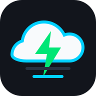

Откройте последний релиз и скачайте файл VoltFlow-Mate-v...apk из блока Assets.

BYDMate-own · Android APK
VoltFlow Mate
Готовая сборка для BYD DiLink: поездки, зарядки, реальный расход, состояние батареи, плавающий виджет и автоматизация через DiPlus. Скачайте файл VoltFlow-Mate-v...apk в блоке Assets последнего релиза.